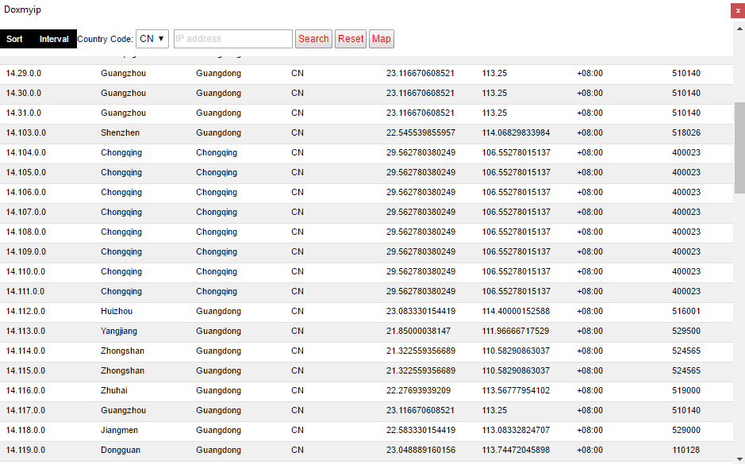

Doxmyip IP Windows tool
1. What is does it do?
Doxmyip IP Windows tool is a simple IP address browser for Windows.
1.2. Features
- Supports the free IP2location Lite database (DB15 binary file) with millions of updated IP addresses.
- Supports sorting of the view with 2 different orders (up and down) and to reset it.
- Supports infinite scroll. Navigate millions of IP addresses with the right scrollbar.
- Supports a filter with 4 different subnet masks (255.255.255.255, 255.255.255.0, 255.255.0.0,255.0.0.0).
- Supports a filter with a country code.
- Supports searching for an ip address.
- Supports a sticky navigation bar.
- Asynchronous database query with JS.
- faster search with the free
optimized IP2Location php library (winner of the
IP2Location php library optimization contest 2016).
1.2.1 Main screen

2. Requirements
-Windows 10 x32/x64 (tested)
-Visual Studio 2015 redistributable x86
-Visual Studio 2013 redistributable x86
-Visual Studio 2010 redistributable x86
-Visual Studio 2008 redistributable x86
-Microsoft Framework 4.6.1
3. Installation
Download the beta. Unpack the archive and open doxmyip.exe. If asked allow the application and PHP to run. Enjoy!
4. Tutorial
4.1 The source code
4.1.1 Download the source code and load the project file with Visual Studio 15. Compile the project.
4.2 Free IP2Location lite
4.2.1 It requires the free IP2Location lite database (binary file) in the database folder in the application folder.
4.3 PHP7
4.4.1 It requires PHP7 in the php7 folder in the application folder.
5. Troubleshooting
Windows XP/Vista/7 may requires .net framework v4.6.1. Also Windows may requires Visual
Studio 2008 redistributable x86, Visual Studio 2010 redistributable x86, Visual Studio 2013 redistributable
x86, Visual Studio 2015 redistributable x86.
6. Changelog
02.08.2016 Initial release
07.08.2016 Major update
12.08.2016 Bugfix high dpi aware tablet pc
31.08.2016 Bugfix country selection